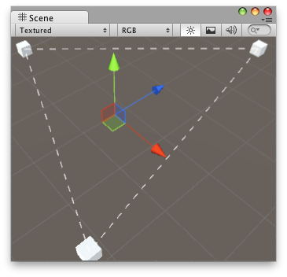

| lineSegments | A list of pairs of points that represent the start and end of line segments. |
| screenSpaceSize | The size in pixels for the lengths of the line segments and the gaps between them. |
Draw a list of dotted line segments.
 "Draw multiple dotted lines in sceneview.".
#pragma strict // Draw lines to the connected game objects that a script has. // if the target object doesn't have any game objects attached // then it draws a line from the object to 0,0,0. @CustomEditor(ConnectedObjects) class ConnectLineHandle extends Editor { var dashSize: float = 4.0f; function OnSceneGUI() { var connectedObjects: ConnectedObjects = target as ConnectedObjects; if (connectedObjects.objs == null || connectedObjects.objs.Length == 0)return ; // we store the start and end points of the line segments in this array var lineSegments: Vector3[] = new Vector3[connectedObjects.objs.Length * 2]; var lastObject: int = connectedObjects.objs.Length - 1; var prevPoint: Vector3; if (connectedObjects.objs[lastObject]) { prevPoint = connectedObjects.objs[lastObject].transform.position; } else { prevPoint = Vector3.zero; } var pointIndex: int = 0; for (var currObjectIndex: int = 0; currObjectIndex < connectedObjects.objs.Length; currObjectIndex++) { // find the position of our connected object and store it var currPoint: Vector3; if (connectedObjects.objs[currObjectIndex]) { currPoint = connectedObjects.objs[currObjectIndex].transform.position; } else { currPoint = Vector3.zero; } // store the starting point of the line segment lineSegments[pointIndex] = prevPoint; pointIndex++; // store the ending point of the line segment lineSegments[pointIndex] = currPoint; pointIndex++; prevPoint = currPoint; } Handles.DrawDottedLines(lineSegments, dashSize); } }
// Draw lines to the connected game objects that a script has. // if the target object doesn't have any game objects attached // then it draws a line from the object to 0,0,0.
using UnityEditor; using UnityEngine; using System.Collections.Generic;
[CustomEditor(typeof(ConnectedObjects))] class ConnectLineHandle : Editor { float dashSize = 4.0f; void OnSceneGUI() { ConnectedObjects connectedObjects = target as ConnectedObjects; if (connectedObjects.objs == null || connectedObjects.objs.Length == 0) return; // we store the start and end points of the line segments in this array Vector3[] lineSegments = new Vector3[connectedObjects.objs.Length * 2];
int lastObject = connectedObjects.objs.Length - 1; Vector3 prevPoint; if (connectedObjects.objs[lastObject]) { prevPoint = connectedObjects.objs[lastObject].transform.position; } else { prevPoint = Vector3.zero; } int pointIndex = 0; for (int currObjectIndex = 0; currObjectIndex < connectedObjects.objs.Length; currObjectIndex++) { // find the position of our connected object and store it Vector3 currPoint; if (connectedObjects.objs[currObjectIndex]) { currPoint = connectedObjects.objs[currObjectIndex].transform.position; } else { currPoint = Vector3.zero; }
// store the starting point of the line segment lineSegments[pointIndex] = prevPoint; pointIndex++;
// store the ending point of the line segment lineSegments[pointIndex] = currPoint; pointIndex++;
prevPoint = currPoint; } Handles.DrawDottedLines(lineSegments, dashSize); } }
And the script attached to this Handle:
//ConnectedObjects.js
public var objs: GameObject[] = null;
using UnityEngine; using System.Collections; public class ConnectedObjects : MonoBehaviour { public GameObject[] objs = null; }
| points | A list of points. |
| segmentIndices | A list of pairs of indices to the start and end points of the line segments. |
| screenSpaceSize | The size in pixels for the lengths of the line segments and the gaps between them. |
Draw a list of indexed dotted line segments.
#pragma strict // Draw lines to the connected game objects that a script has. // if the target object doesn't have any game objects attached // then it draws a line from the object to 0,0,0. @CustomEditor(ConnectedObjects) class ConnectLineHandle extends Editor { var dashSize: float = 4.0f; function OnSceneGUI() { var connectedObjects: ConnectedObjects = target as ConnectedObjects; if (connectedObjects.objs == null || connectedObjects.objs.Length == 0)return ; // we store the points of the line segments in this array var points: Vector3[] = new Vector3[connectedObjects.objs.Length]; // the index to the start and the end point var segmentIndices: int[] = new int[connectedObjects.objs.Length * 2]; // create the points and line segments indices var prevIndex: int = connectedObjects.objs.Length - 1; var pointIndex: int = 0; var segmentIndex: int = 0; for (var currIndex: int = 0; currIndex < connectedObjects.objs.Length; currIndex++) { // find the position of our connected object and store it if (connectedObjects.objs[pointIndex]) { points[pointIndex] = connectedObjects.objs[currIndex].transform.position; } else { points[pointIndex] = Vector3.zero; } // the index to the start of the line segment segmentIndices[segmentIndex] = prevIndex; segmentIndex++; // the index to the end of the line segment segmentIndices[segmentIndex] = pointIndex; segmentIndex++; pointIndex++; prevIndex = currIndex; } Handles.DrawDottedLines(points, segmentIndices, dashSize); } }
// Draw lines to the connected game objects that a script has. // if the target object doesn't have any game objects attached // then it draws a line from the object to 0,0,0.
using UnityEditor; using UnityEngine; using System.Collections.Generic;
[CustomEditor(typeof(ConnectedObjects))] class ConnectLineHandle : Editor { float dashSize = 4.0f; void OnSceneGUI() { ConnectedObjects connectedObjects = target as ConnectedObjects; if (connectedObjects.objs == null || connectedObjects.objs.Length == 0) return;
// we store the points of the line segments in this array Vector3[] points = new Vector3[connectedObjects.objs.Length];
// for each line segment we need two indices into the points array: // the index to the start and the end point int[] segmentIndices = new int[connectedObjects.objs.Length * 2];
// create the points and line segments indices int prevIndex = connectedObjects.objs.Length - 1; int pointIndex = 0; int segmentIndex = 0; for (int currIndex = 0; currIndex < connectedObjects.objs.Length; currIndex++) { // find the position of our connected object and store it if (connectedObjects.objs[pointIndex]) { points[pointIndex] = connectedObjects.objs[currIndex].transform.position; } else { points[pointIndex] = Vector3.zero; }
// the index to the start of the line segment segmentIndices[segmentIndex] = prevIndex; segmentIndex++;
// the index to the end of the line segment segmentIndices[segmentIndex] = pointIndex; segmentIndex++;
pointIndex++; prevIndex = currIndex; } Handles.DrawDottedLines(points, segmentIndices, dashSize); } }
And the script attached to this Handle:
//ConnectedObjects.js
public var objs: GameObject[] = null;
using UnityEngine; using System.Collections; public class ConnectedObjects : MonoBehaviour { public GameObject[] objs = null; }